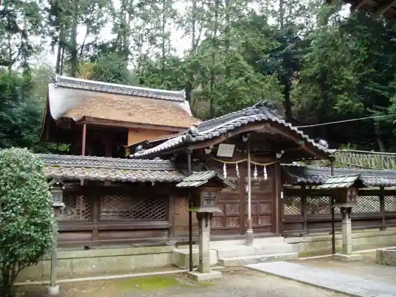
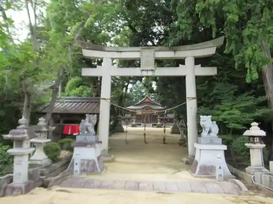
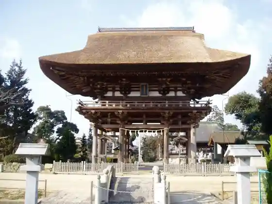
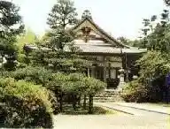

Kagami Shrine
Ryuo, Shiga · 0748-58-0959 · Official / source link

Katte Shrine
Ryuo, Shiga · 0748-58-3715 · Official / source link

Nae Village Shrine
Ryuo, Shiga · 0748-57-0160 · Official / source link

Ryuo Tera
Ryuo, Shiga · 0748-57-1370 · Official / source link

Jo Man Tera
Ryuo, Shiga · Official / source link
Aguri Park Ryuo
Ryuo, Shiga · 0748-57-1311 · Official / source link
Shigaken Kibogaoka Bunka Park
Ryuo, Shiga · 077-586-2111 · Official / source link
Yukino Yama Shiseki Plaza (Imose Village)
Ryuo, Shiga · 0748-57-1819 · Official / source link
Shigaken Kibogaoka Bunka Park Yagaikatsudo Center
Ryuo, Shiga · 077-586-1100 · Official / source link
Roadside Station Ryuo Kagami Village
Ryuo, Shiga · 0748-58-8700 · Official / source link
Masamitsu Tera
Ryuo, Shiga · Official / source link
Hoshigasaki Castle Ruins
Ryuo, Shiga · 0748-58-3715 · Official / source link
Yoshitsune no (Genpuku Ike)
Ryuo, Shiga · Official / source link
Tennen Onsen Gamo no Baths
Ryuo, Shiga · 0748-57-1426 · Official / source link
Ryuo Haikingukosu (Yukino Yama Kagamiyama)
Ryuo, Shiga · Official / source link
Doragonhatto (Ryuo Sogo Sports Park)
Ryuo, Shiga · 0748-58-3712 · Official / source link
Saiko Jiseki no Hokyo Into
Ryuo, Shiga · Official / source link
Saiko Tera no Ishi Toro
Ryuo, Shiga · Official / source link
Kumo Kan Jiseki no Ryuo Miya
Ryuo, Shiga · Official / source link
Nio Mikoto
Ryuo, Shiga · Official / source link
Hotate Kai Katachi Burial Mound Amemiya Burial Mound
Ryuo, Shiga · Official / source link
Iwaya Burial Mound Iwaya Fudo
Ryuo, Shiga · 0748-58-3715 · Official / source link
Omi Kuni Kusurishi Yama Shikoku Yasohachigatokoro Reijo
Ryuo, Shiga · Official / source link
Mitsui Autoretto Park Shiga Ryuo
Ryuo, Shiga · 0748-58-5031 · Official / source link
Shigaken Kibogaoka Bunka Park Seinen no Shiro
Ryuo, Shiga · 077-586-2111 · Official / source link
Ryuo Town Hall
Ryuo, Shiga · 0748-58-3700 · Official / source link